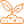

Sensores
✕Selecionar os sensores e defina os níveis de alerta e crítico
Sensor
Ativo
Nível de alerta
Nível crítico
Temperatura
Em graus Celsius (°C)

Umidade do Solo
Em porcentagem (%)
Umidade do Ar
Em porcentagem (%)
Luminosidade
Em porcentagem (%)